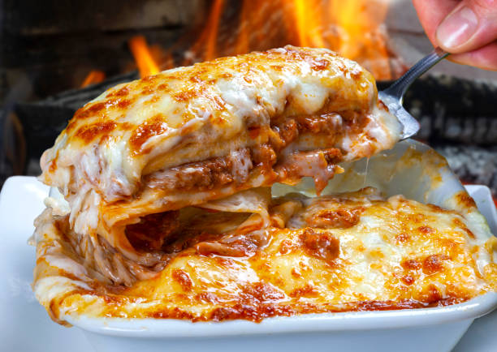

Lasagna

Description
Lasagna is an Italian dish made of layers of pasta, meat sauce, cheese, and béchamel, baked until golden and bubbling. It's a hearty, comforting meal enjoyed worldwide.
Ingredients
- Lasagna Noodles
- Ground beef or pork
- Tomato Sauce
- Ricotta cheese
- Mozzarella cheese
- Parmesan Cheese
- Eggs
- Garlic
- Onion
- Olive oil
- Salt and pepper
- Fresh basil or oregano (optional)
Steps
- Cook lasagna noodles according to package instructions
- Brown ground meat with garlic and onion, then add tomato sauce and season with salt, pepper and herbs
- Mix ricotta cheese, egg and parmesan ina bowl
- Layer noodles, meat sauce, ricotta mixture and mozzarella in a baking dish
- Repeat layers, finishing with mozzarella on top
- Bake at 375ºF (190ºC) for 30-40 minutes until bubbly and golden
- Let it rest before serving
Go Back